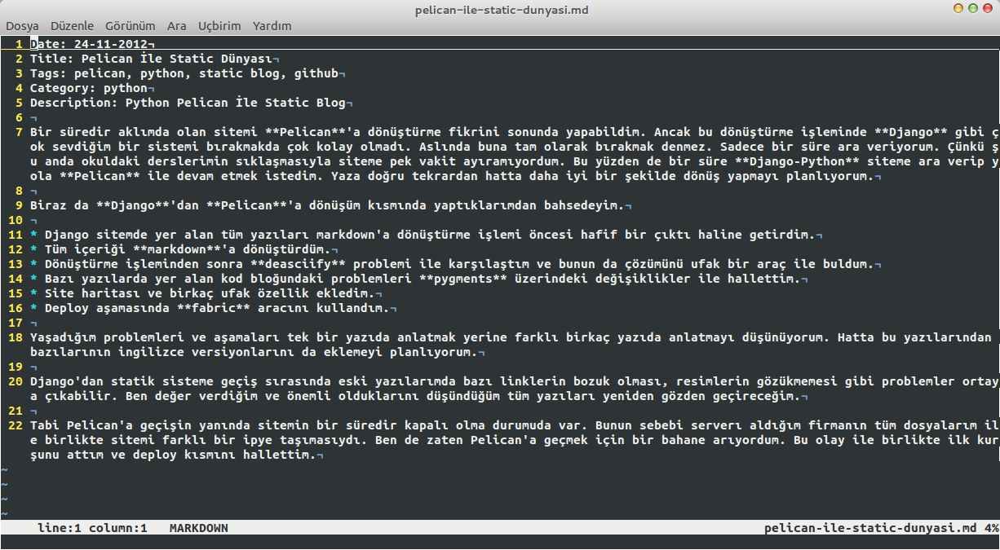

Bir süredir aklımda olan sitemi Pelican'a dönüştürme fikrini sonunda yapabildim. Ancak bu dönüştürme işleminde Django gibi çok sevdiğim bir sistemi bırakmakda çok kolay olmadı. Aslında buna tam olarak bırakmak denmez. Sadece bir süre ara veriyorum. Çünkü şu anda okuldaki derslerimin sıklaşmasıyla siteme pek vakit ayıramıyordum. Bu yüzden de bir süre Django-Python siteme ara verip yola Pelican ile devam etmek istedim. Yaza doğru tekrardan hatta daha iyi bir şekilde dönüş yapmayı planlıyorum.
Biraz da Django'dan Pelican'a dönüşüm kısmında yaptıklarımdan bahsedeyim.
- Django sitemde yer alan tüm yazıları markdown'a dönüştürme işlemi öncesi hafif bir çıktı haline getirdim.
- Tüm içeriği markdown'a dönüştürdüm.
- Dönüştürme işleminden sonra deasciify problemi ile karşılaştım ve bunun da çözümünü ufak bir araç ile buldum.
- Bazı yazılarda yer alan kod bloğundaki problemleri pygments üzerindeki değişiklikler ile hallettim.
- Site haritası ve birkaç ufak özellik ekledim.
- Deploy aşamasında fabric aracını kullandım.
Yaşadığım problemleri ve aşamaları tek bir yazıda anlatmak yerine farklı birkaç yazıda anlatmayı düşünüyorum. Hatta bu yazılarından bazılarının ingilizce versiyonlarını da eklemeyi planlıyorum.

Django'dan statik sisteme geçiş sırasında eski yazılarımda bazı linklerin bozuk olması, resimlerin gözükmemesi gibi problemler ortaya çıkabilir. Ben değer verdiğim ve önemli olduklarını düşündüğüm tüm yazıları yeniden gözden geçireceğim.
Tabi Pelican'a geçişin yanında sitemin bir süredir kapalı olma durumuda var. Bunun sebebi serverı aldığım firmanın tüm dosyalarım ile birlikte sitemi farklı bir ipye taşımasıydı. Ben de zaten Pelican'a geçmek için bir bahane arıyordum. Bu olay ile birlikte ilk kurşunu attım ve deploy kısmını hallettim.